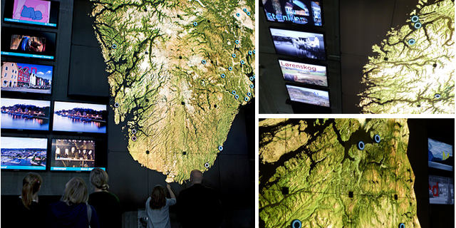
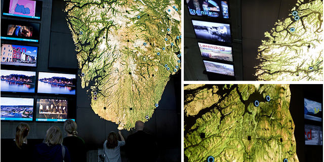

Rockheim
Rockheim is the Norwegian Museum of Rock & Roll (seriously!),
located in beautiful Trondheim, Norway.
I was contracted by Parallel World Labs,
an internationally renowned interactive agency, to consult on technical installation of a/v equipment,
the server room, and the network architecture... Following that, I stepped onto the programming team for
an extended development period, and then was part of the post-launch support team.
All told, I spent 11 months there!
Working with a talented team of artists, designers, and technologists, I ended up touching over a dozen exhibits - out of 20 or so -
as part of my work there.
Programming largely in Touch Designer,
I implemented technlogies such as motion capture and OpenCV algorithms, Infrared sensors, DMX-controlled laser photocells, RFID triggers,
multitouch screens, and multichannel audio and video playback...
On top of this, I wrote custom software to implement networking state machines and CMS manipulation.
More information on the project can be seen on
PWL's site
and in an article on the
Derivative site.
 
